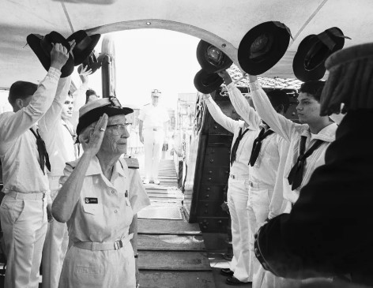

Grace Brewster Murray nació el 9 de diciembre de 1906 en Nueva York. Desde muy pequeña mostró interés por las matemáticas y la ciencia, lo cual fue alentado por su familia. Su curiosidad fue tan intensa que a los siete años desarmó todos los relojes de su casa para comprender cómo funcionaban. Este temprano interés por la mecánica fue el inicio de una mente inquieta y dedicada al conocimiento.
Estudió en el Vassar College, donde se graduó en matemáticas y física en 1928 con honores. Posteriormente, continuó en la Universidad de Yale, donde obtuvo su maestría en 1930 y su doctorado en 1934. Durante esos años, Grace Hopper desarrolló una base sólida en matemáticas puras, lo que la llevó a impartir clases como profesora en Vassar. Su carrera académica fue interrumpida por la Segunda Guerra Mundial, evento que transformaría su destino profesional hacia la computación.
Durante la Segunda Guerra Mundial, Hopper se unió a la Marina de los Estados Unidos. Fue asignada al equipo de Harvard que trabajaba en el Mark I, una de las primeras computadoras electromecánicas. Su participación fue crucial en la creación de programas para esta máquina, que era utilizada para cálculos balísticos y proyectos científicos. A pesar de enfrentar obstáculos por ser mujer, se destacó como una de las primeras programadoras reconocidas.
Hopper continuó su carrera en compañías como Eckert–Mauchly Computer Corporation y luego Remington Rand, participando en el desarrollo del UNIVAC I, el primer ordenador comercial en Estados Unidos. Su visión revolucionaria consistía en que las computadoras debían ser accesibles para todos, no solo para expertos en matemáticas. Esta idea la llevó a trabajar en compiladores y, más adelante, en la creación del lenguaje COBOL, que democratizó la programación en entornos empresariales.